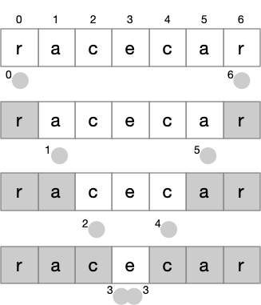

Recursive Functions
Contents
Recursive Functions#
We have written many functions that call other functions. Could we write a function that calls itself? A function that calls itself directly or indirectly is called a recursive functon. We would have to be careful, of course. The following will not work:
def mult_v1(a: int, b: int) -> int:
"""Use commutative law to multiply, a*b = b*a"""
return mult_v1(b, a)
print(mult_v1(5,3))
This circular definition of multiplication in terms of
multiplication fails, as we expect. It’s a kind an infinite
recursive loop. Python will eventually report a RecursionError
exception:
RecursionError: maximum recursion depth exceeded
And yet we can write a recursive function for multiplication. The following is a slow way to multiply integers, but it works:
def mult_v2(a: int, b: int) -> int:
"""Multiplication by repeated addition.
a and b must be non-negative integers.
"""
if a == 0:
return 0
else:
return b + mult_v2(a - 1, b)
print(mult_v2(3, 5))
15
Why does mult_v2 work, without causing an infinite
recursive loop? The key is that while mult_v2
makes a recursive call on mult_v2, the same function, it does not
call mult_v2 on the same argument values. The recursive call is made
with a smaller value for a, until eventually a must be 0. We
can think of it as transforming mult_v2(3, 5) first into
5 + mult_v2(2, 5), then 5 + 5 + mult_v2(1, 5), then
5 + 5 + 5 + mult_v2(1, 5), and finally 5 + 5 + 5 + 0.
You can visualize this progression in PythonTutor.
In mult_v2, the code is divided into a base
case (a == 0) and a recursive case (a > 0, which we have
simplified to else). Our recursive functions will always have
this structure. The base case is a case that can be handled
directly, without a recursive call. The recursive case must make
the recursive call on data values that are “smaller” in the sense
that with repeated application the function must eventually reach
the base case. When we write recursive functions involving numbers,
“smaller” is usually our familiar notion of “smaller numbers”. When
we write other kinds of recursive functions, we may have to think
harder about what “smaller” could mean, to guarantee that we always
reach the base case.
Recursion in computing is closely related to induction in mathematics. Not surprisingly, then, many inductive definitions can be straightforwardly translated into recursive functions. For example, the factorial function can be inductively defined as: \( n! = \left\{ \begin{array}{ll} 1 & \textrm{if } n < 2\\ n \times (n-1)! & \textrm{otherwise } \end{array} \right. \)
Again we see a base case (n < 2) and a recursive (or inductive) case. Mathematicians might define the base case before or after the inductive case, but in programming we will almost always check the base case first. We can translate the mathematical definition above to Python very simply:
def factorial(n: int) -> int:
"""The inductive definition of factorial"""
if n < 2:
return 1
return n * factorial(n - 1)
factorial(5)
120
While math is full of inductive definitions that can become recursive functions, recursion is not limited to mathematical or numerical problems. Often in computing, recursion is applied to collections (lists, dicts, etc). Sometimes the recursive call is on a smaller piece of a collection. Other times the data itself is hierarchical, and the recursive calls follow the hierarchical structure of the data.
Shrinking pieces of a collection#
A palindrome is a word or phrase that is the same written forwards or backwards. For example, “kayak” is a palindrome, as are “rotator” and “wow”. We can define palindromes inductively as follows:
A single letter word is always a palindrome (even if it’s a very boring palindrome).
The empty string is also a palindrome.
If some sequence of letters w is a palindrome, and x is a letter, then xwx is a palindrome.
The first two parts of the definition may seem a little strange. If you were asked for examples of palindromes, you probably would not answer with “a” or “I”. You almost certainly wouldn’t answer with the empty string. But strange as they seem, we need these as base cases! (I will return to this below and write a “helper function” that can prevent us from accepting these trivial palindromes.)
The third rule, which says that xwx is a palindrome if x is a letter and w is a palindrome, is the recursive case. The definition looks like it is adding a letter x to both ends of a word, but we will use it backwards: Given a word xwy, we will check whether x and y are the same letter, and then make the recursive call on a shorter word w.
This will be simpler with a list of letters than with a string.
Python makes it easy to get such a list of letters:
list("hotdog")
['h', 'o', 't', 'd', 'o', 'g']
Now I want to write a recursive function that returns True if its
argument is a palindrome, and False otherwise. In the first
version, I’ll use Python list operations to extract the first, last,
and middle letters.
def palindrome_v1(word: list[str]) -> bool:
"""True if word is a palindrome"""
# Base cases
if len(word) < 2:
return True
# Recursive case
x = word[0] # First letter
w = word[1:-1] # Middle letters, could be empty
y = word[-1] # Last letter
return x == y and palindrome_v1(w)
def is_it_palindrome(word: str) -> bool:
"""Print palindrome judgment for a string"""
letters = list(word)
if palindrome_v1(letters):
print(f"'{word}' is a palindrome")
else:
print(f"'{word}' is NOT a palindrome")
is_it_palindrome("racecar")
is_it_palindrome("noon")
is_it_palindrome("faff")
is_it_palindrome("a")
'racecar' is a palindrome
'noon' is a palindrome
'faff' is NOT a palindrome
'a' is a palindrome
You can visualize the execution of palindrome_v2 with Python Tutor.
Logical values#
Sometimes the value that becomes “smaller” with each recursive call is not the value of an individual variable, but some conceptual value that can derived from one or several variables. I will call these “logical values” (as versus “physical values” in an individual variable); another term you might encounter is “ghost variables”.
Instead of
decomposing the list of letters in word as in palindrome_v1, we
might pass indexes of the first and last letters considered. Then
we can pass the same list in a recursive call, but make the logical
value smaller by passing different indexes of the first and last
letter under consideration, stopping when they cross (indicating an
empty word) or meet (indicating a word of one character).

Instead of checking whether len(word) < 2, we will check whether
last - first < 1.
def palindrome_v2(word: list[str], first: int, last: int) -> bool:
"""True if word[first:last] is a palindrome.
first and last must be non-negative integers.
"""
# Base cases
if last - first < 1:
return True
# Recursive case
x = word[first]
y = word[last]
return x == y and palindrome_v2(word, first+1, last-1)
def is_it_palindrome(word: str) -> bool:
"""Print palindrome judgment for a string"""
letters = list(word)
if palindrome_v2(letters, 0, len(letters)-1):
print(f"'{word}' is a palindrome")
else:
print(f"'{word}' is NOT a palindrome")
is_it_palindrome("racecar")
is_it_palindrome("noon")
is_it_palindrome("faff")
is_it_palindrome("a")
'racecar' is a palindrome
'noon' is a palindrome
'faff' is NOT a palindrome
'a' is a palindrome
A wrapper function#
We noted above that we might not like to consider “a” or “I”
palindromes, and we might especially not like considering the empty
string “” a palindrome. Also palindrome_v2 takes a list and two
integers as arguments. We’d rather have a function that takes a
string and returns True only if that string is a palindrome of at
least two letters. A typical way of “fixing up” a function is by
writing another function to “wrap” it.
By convention in Python, a name that begins with an underscore
character ("_") is “hidden” or “internal” to a module. For
palindrome
checking, we can give the wrapper function a “public” name
palindrome, and use _palindrome for its internal partner that
does the main work. The wrapper function palindrome will just
check the special cases (rejecting empty and one-letter candidates)
and call the internal function _palindrome with the arguments it
requires.
def palindrome(word: str) -> bool:
"""Is word a palindrome of at least 2 letters?"""
if len(word) < 2:
return False
letters = list(word)
return _palindrome(letters, 0, len(letters)-1)
def _palindrome(word: list[str], first: int, last: int) -> bool:
"""True if word[first:last] is a palindrome.
first and last must be non-negative integers.
"""
# Base cases
if last - first < 1:
return True
# Recursive case
x = word[first]
y = word[last]
return x == y and _palindrome(word, first+1, last-1)
def is_it_palindrome(word: str) -> bool:
"""Print palindrome judgment for a string"""
if palindrome(word):
print(f"'{word}' is a palindrome")
else:
print(f"'{word}' is NOT a palindrome")
is_it_palindrome("racecar")
is_it_palindrome("noon")
is_it_palindrome("faff")
is_it_palindrome("a")
'racecar' is a palindrome
'noon' is a palindrome
'faff' is NOT a palindrome
'a' is NOT a palindrome
Note that the wrapper function rejected “a”.
Our project for this week makes recursive calls to fill cells in a grid. The grid is always the same size in the recursive calls, but the “logical value” that gets smaller is the number of cells that can be filled. This logical value must be smaller with each level of recursive call, and when it is zero the base case must apply, ending the recursion.
We will see other projects in which recursive calls are made with the same collection (usually a list) but with smaller and smaller logical portions of that collection.
Recursion for hierarchical data structures#
We have seen that lists can be nested within lists. So far we have used lists within lists mainly to represent grids or matrices. We might also encounter more irregular nested structures. We might not know in advance how deeply the lists will be nested or how long they will be.
How could we sum the integers in a nest of lists like this?
[[1, 2, [3, 4], 5, [6, 7], 8], 9]
Python provides an isinstance function that we can use to
determine whether a value is a list, an int, or something else:
def what_is_that(v):
"""Print a description of v"""
if isinstance(v, list):
print(f"{v} is a list!")
elif isinstance(v, int):
print(f"{v} is an integer!")
else:
print(f"{v} is neither a list nor an integer")
what_is_that([[1, 2, [3, 4], 5, [6, 7], 8], 9])
what_is_that(4)
[[1, 2, [3, 4], 5, [6, 7], 8], 9] is a list!
4 is an integer!
We can use isinstance to distinguish between the base case and
recursive case in a function to sum the integers in nested lists
like the example above.
def sum_atoms(m: object) -> int:
"""Sum the integer elements of nested lists"""
if isinstance(m, int):
return m
if isinstance(m, list):
sum = 0
for el in m:
sum += sum_atoms(el)
return sum
# Neither an int nor a list? Ignore it.
return 0
s = sum_atoms([1, [2, 3], 4])
print(s)
t = sum_atoms([[1, 2, [3, 4], 5, [6, 7], 8], 9])
print(t)
10
45
Hierarchical data structures are very common: For example, the
Document Object Model (DOM) tree representation of a web
page. A web server transmits HTML web content to a browser as text
with “tags” like <p> and <div> describing its hieararchical
structure. The browser
transforms that text into a DOM tree that manifests the
hierarchical structure (e.g., a paragraph (<p>) in the text might be
nested within a division (<div>), which might be nested within
another division. If interaction is controlled by JavaScript
functions, those functions act on the DOM tree, not the text.
We will see many more examples of recursion with hierarchical data
structures in later courses, when we have more techniques for
building those data structures.